Jeanette Yue
Front-end and dApp developer seeking to soak up experience and explore new ideas.
Background in user-centered design and game theory.
Interests include blockchain, creative writing, and trading.
Front-end and dApp developer seeking to soak up experience and explore new ideas.
Background in user-centered design and game theory.
Interests include blockchain, creative writing, and trading.
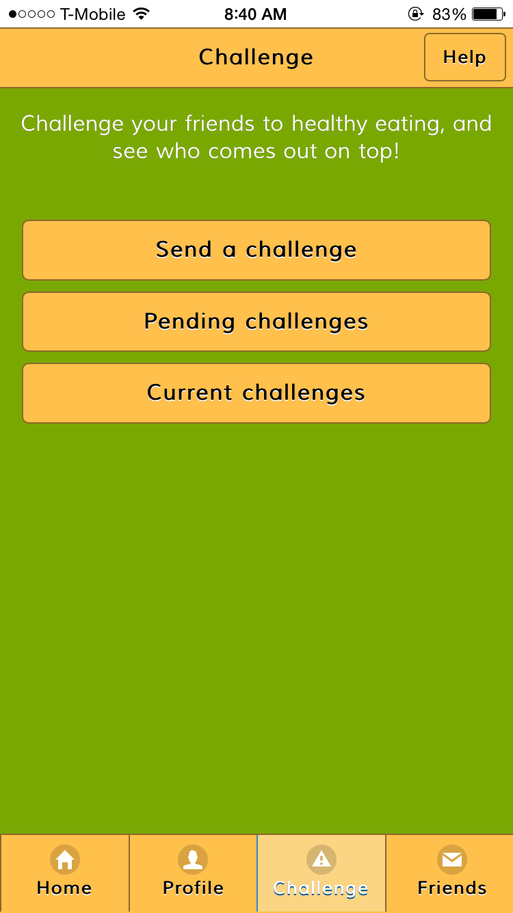
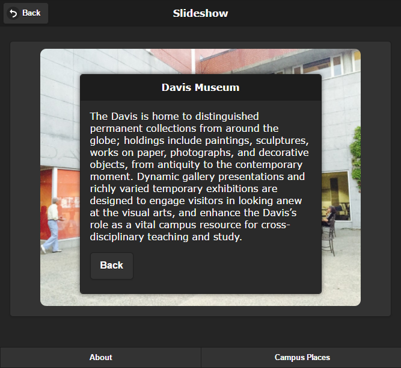
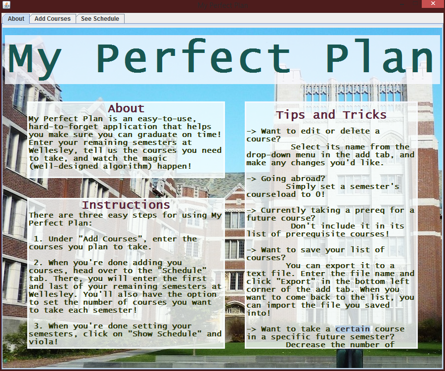
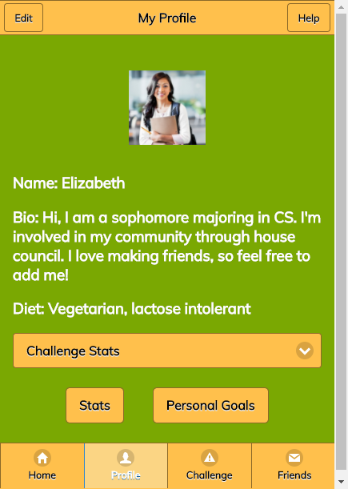
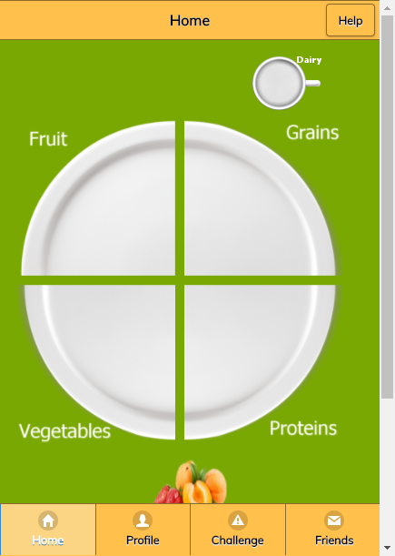
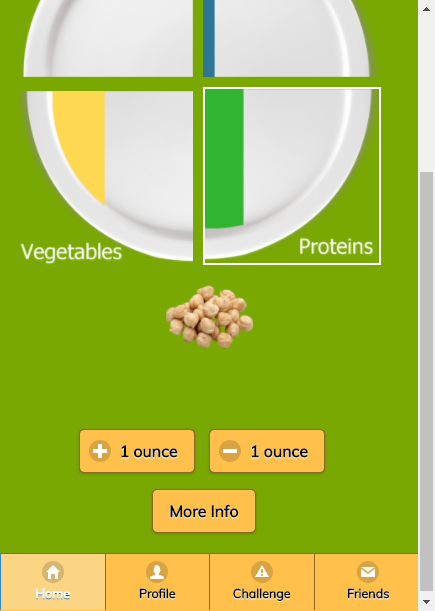

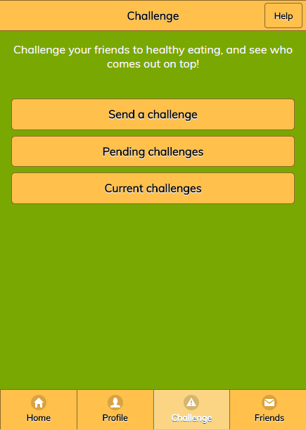
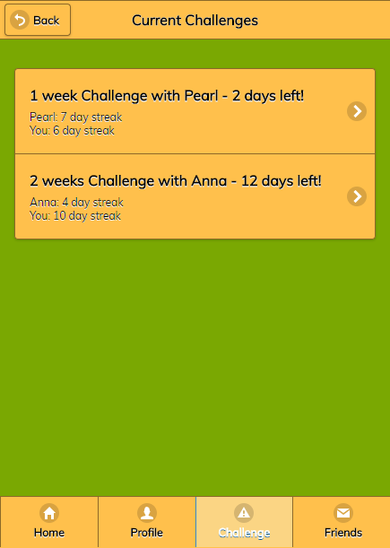
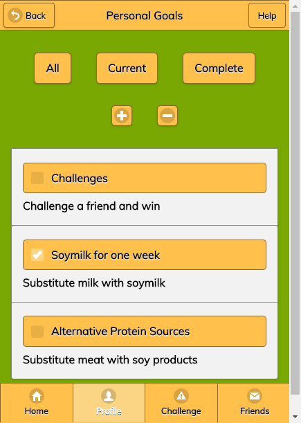
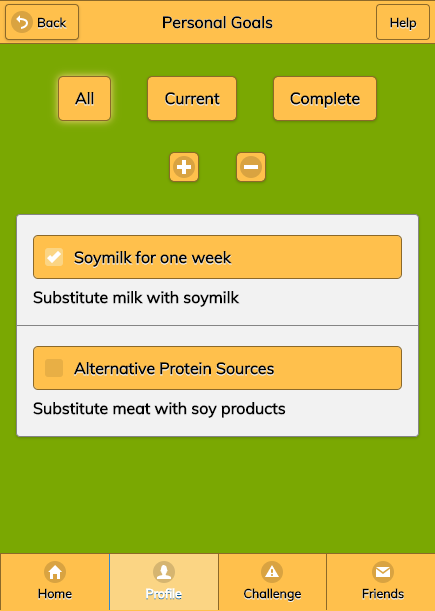
Partners: Jennifer Cho and Soobin Yang
Battle of the Plates is a nutrition tracking web app that uses gamified elements to encourage students to track what they eat. This was conceived from our concerns regarding student eating habits on campus. Through user studies, we discovered that students were more concerned with nutrition than weight.
The prototype was built iteratively via the waterfall model, first with storyboards, paper prototypes, and then with jQuery Mobile.
I was in charge of implementing the main "plate" which allowed users to easily record their meals, responsive progress bars for each food group, and the user's personal goals list.
The entire process is documented here.
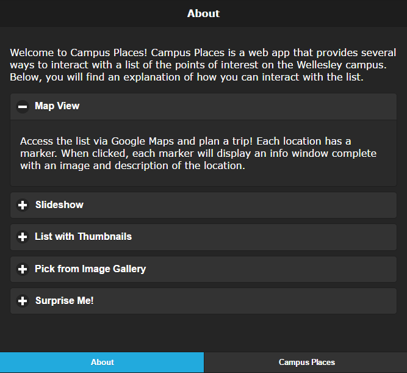
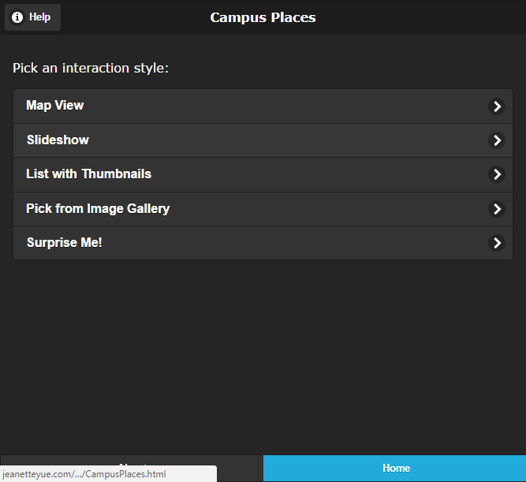
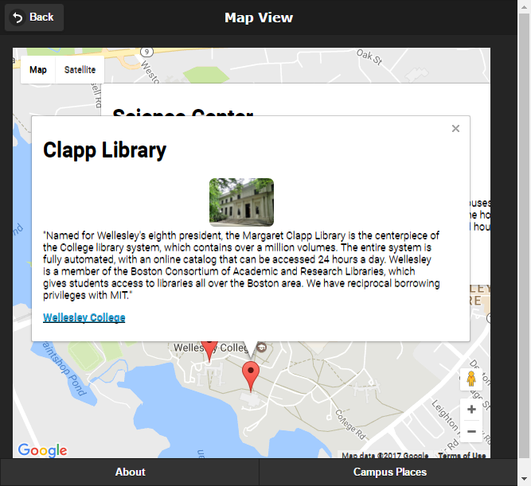
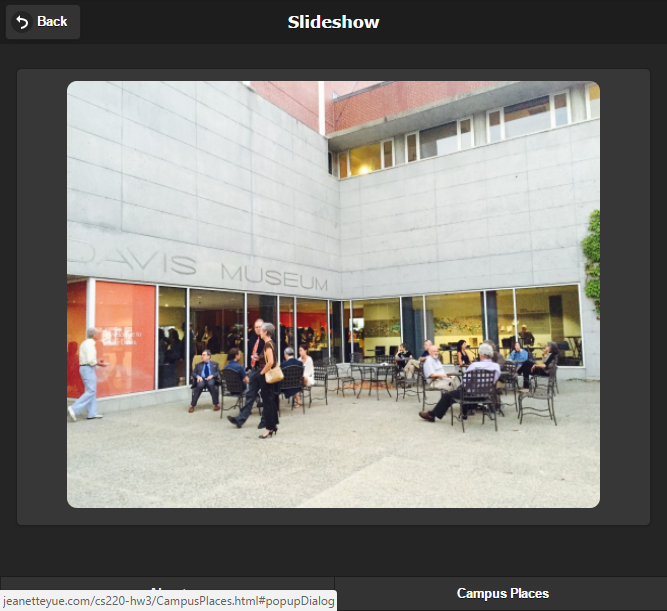
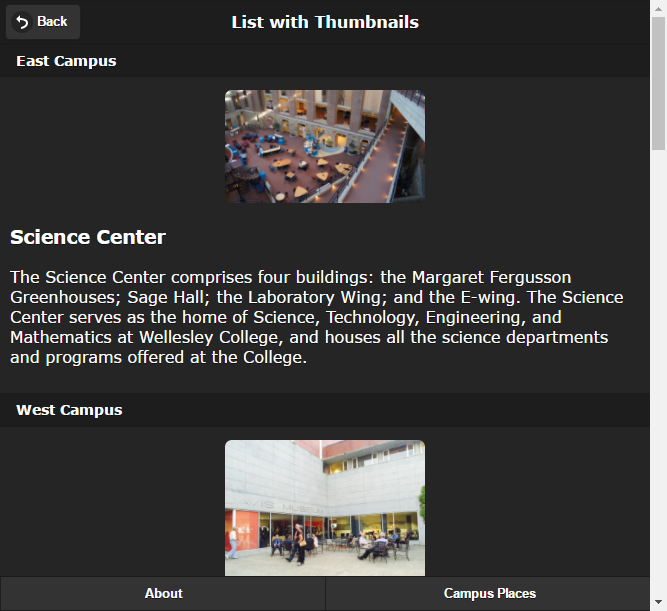
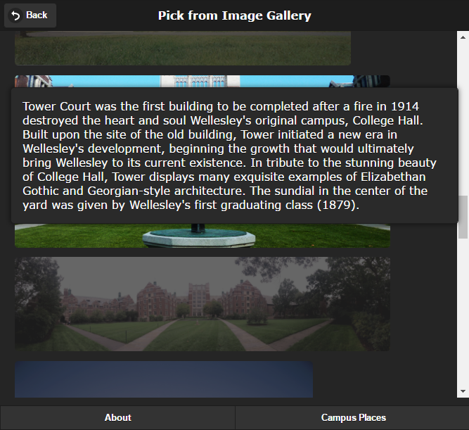
Campus Places is a web app build with jQuery Mobile that provides information about points of interest at Wellesley College. It allows users to choose how they want to interact with the information. Interactions include a map view, a touch-enabled slideshow, a list with thumbnails, and an image gallery.

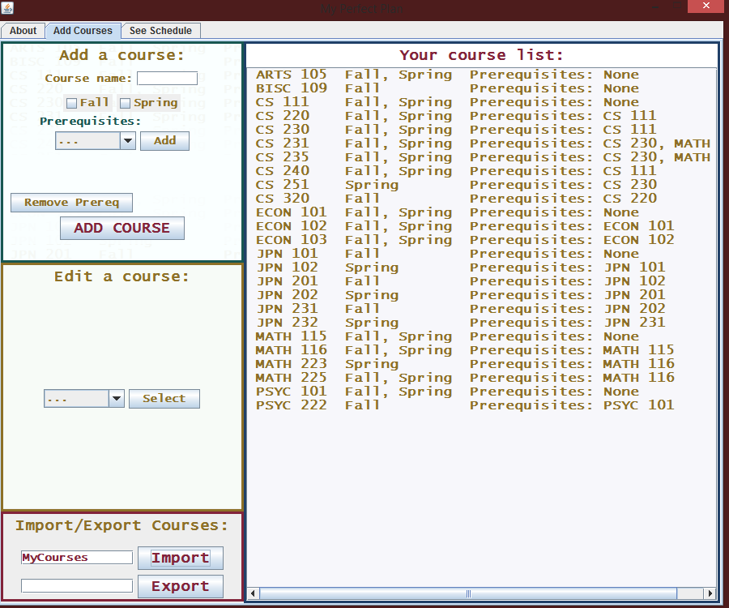
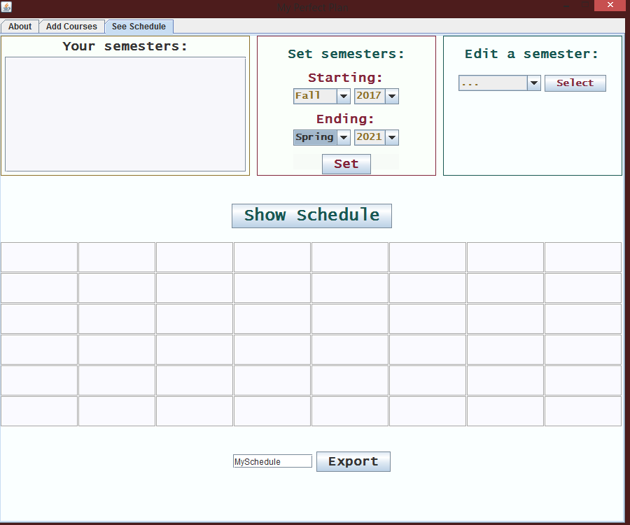
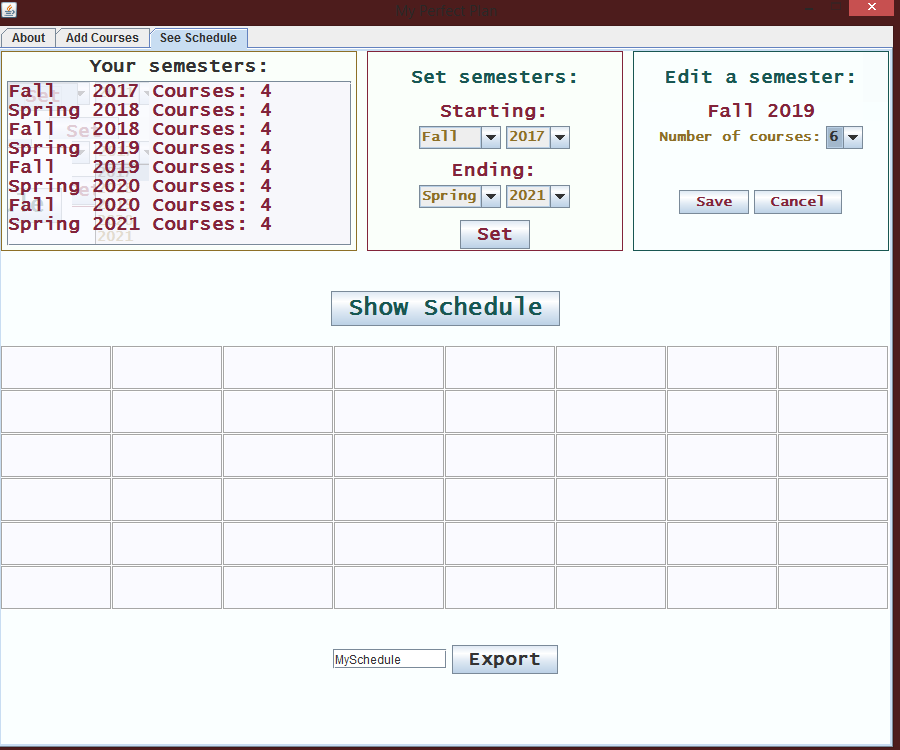
Partner: Sam Mincheva
My Perfect Plan is an application that helps students plan their academic schedules. Tailored or the semester system, the application helps students graduate on time by planning for degree requirements and studying abroad. There are three tabs: "About," "Add Courses," and "See Schedule." Students can import previous course lists or manually create a new list by specifying the course name, semester offered, and course dependencies. I was responsible for "See Schedule," which creates a schedule based on the inputed number of semesters and desired course load. It prioritizes courses with many prerequisites and those offered only once a year.